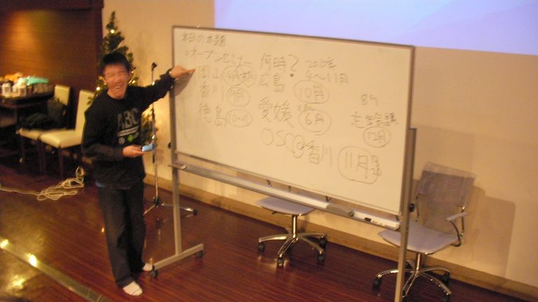

忘年会議2009
参加した皆様、どうもお疲れ様でした。
25名の方々にご参加いただけました。
ノベルティもたくさん集まり、なんと一人2個以上になりました。持ってきていただいた方々、どうもありがとうございました。
?開催風景

?開催概要
日時
12/19（土）16:00から19:00
会場
Ryoutei
岡山県岡山市北区奉還町２－５－２３
TEL：086-214-0883
JR岡山駅西口から徒歩5分
http://www.hotpepper.jp/strJ000032242/
会費
3500円（飲み放題）
?参加申し込み方法
ATNDで参加申し込みをしてください
http://atnd.org/events/1819
?LT
- 今岡さん
- 【タイトル】ドロン君ネタ（仮）
- 大垣さん
- 【タイトル】未定
- 白石さん
- 【タイトル】可杯（べくはい）について
- 資料：http://docs.google.com/present/view?id=df24rfm9_47d2wm8fhb
- 西尾さん
- 【タイトル】いつもの連載（仮）
- 資料：nishio.pdf(1361)
- 花田さん
- 【タイトル】駆け抜けた二十歳の青春。Perfume2009年の軌跡（仮）
- ひらさん
- 【タイトル】勉強会発表者発掘計画2010
- きしうえさん
- 【タイトル】未定
- psideさん
- 【タイトル】未定
- 三輪さん
- 【タイトル】例の走行体（仮）
Copyright(C)2009 オープンラボ岡山運営委員会 All rights reserved.